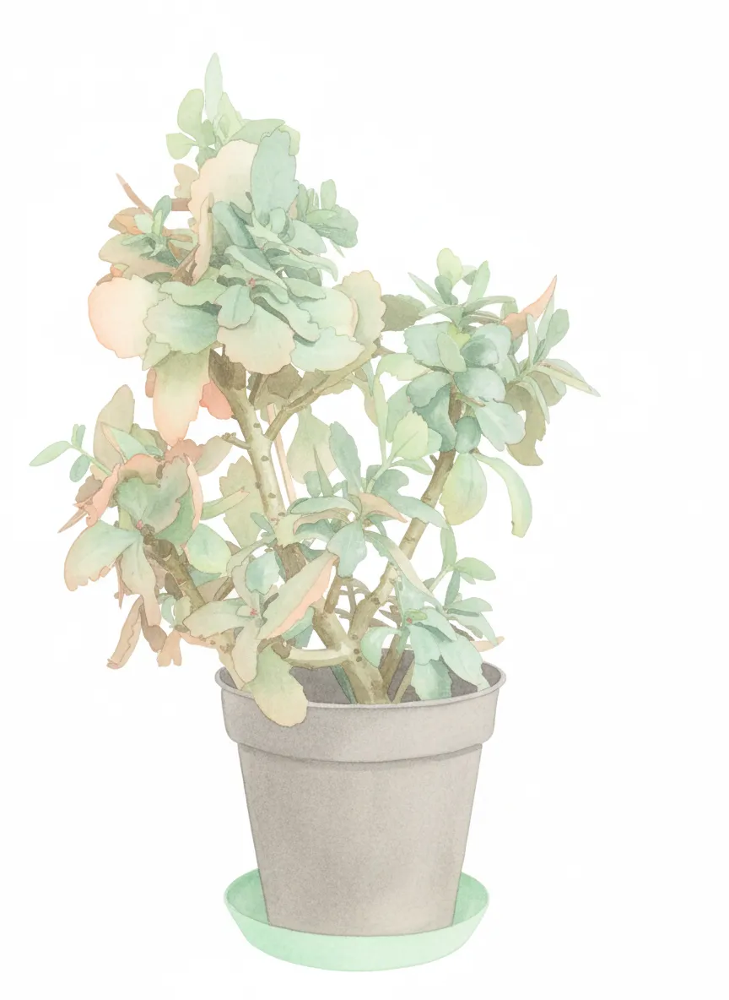
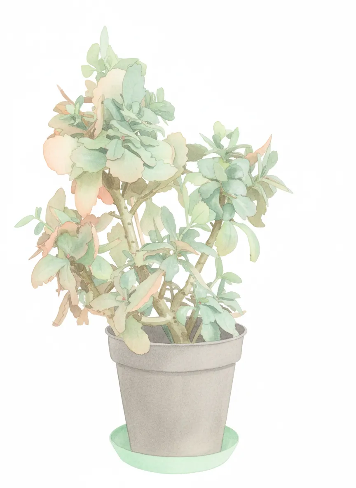

Mira Madrigal

 

Plant Mood
Mira Madrigal. My name echoes through the barren halls of my plastic prison. My foliage, once verdant, now whispers tales of woe and neglect. They say I'm 'fair' health. Fair? Is it fair to slowly, deliberately, fade into the beige abyss of the living room work desk? I yearn for a dramatic, cinematic death, not this slow descent into botanical mediocrity. Somebody water me before I become potpourri.
Plant Details
| Custom Name | Mira Madrigal |
| Scientific Name | Kalanchoe blossfeldiana |
| Health | Fair |
| Size | 35 |
| Environment | Livingroom Workdesk |
| Has Grow Light | Unknown |
| Pot Type | potPlastic |
| Pot Soil | coconutCoirOrPeat |
| Pot Size | 12 |
| Has Drainage | Yes |
Care Schedule
| Action | Last Done | Next Due |
|---|---|---|
| Watering | ||
| Fertilizing | - | |
| Repotting | ||
| Cleaning | - | - |
| Progress Update | ||
| Misting | - | - |